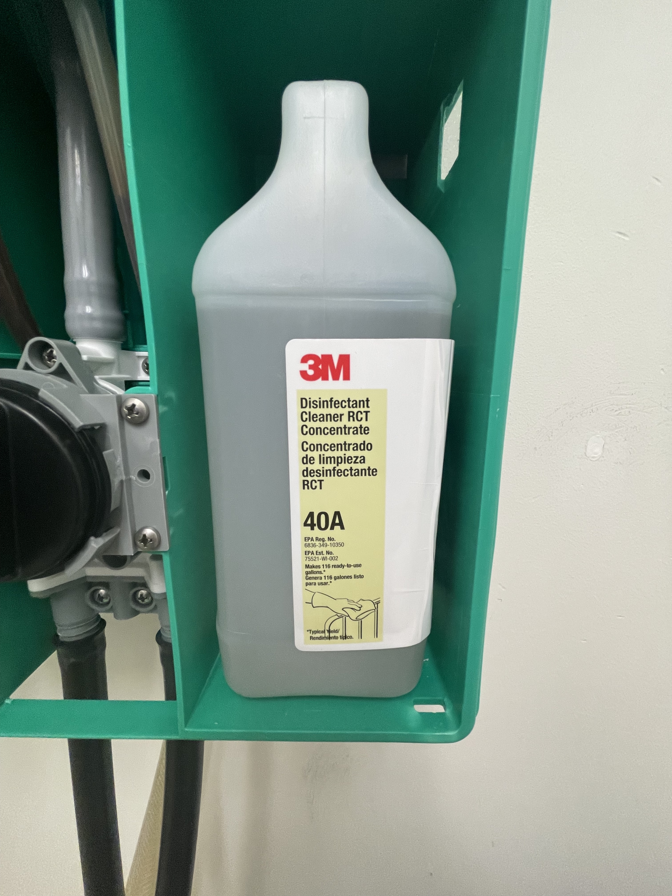
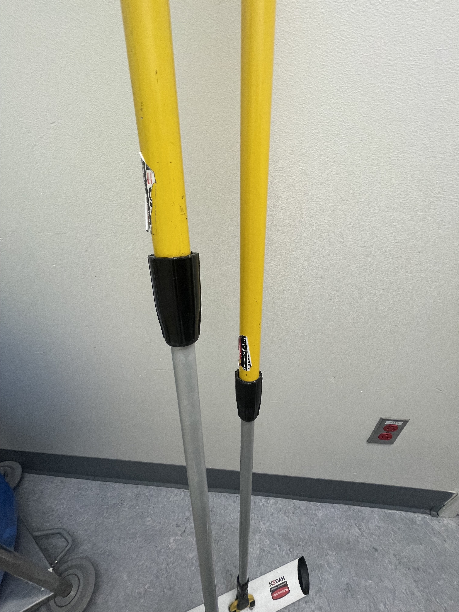

How to: Gathering Supplies
Step 1: Locating the proper cleaning materials
In the Environmental Services Closet, you will find all of the items needed for cleaning an operating room. These include;
- yellow buckets
- microfiber towels
- microfiber mop heads
- mop handle
- cleaning solution

Step 2: What happens if I am exposed to the solution?!
Knowing where the safety data sheets (previously referred to as Material Safety Data Sheets, or MSDS) for any chemical being used is extremely important (see step 3 for PPE list).
In the event you have been exposed to a chemical, immediately rinse your eyes/wash your hands. Notify the charge nurse and refer to the safety data sheet (SDS).

Step 3: Dispensing the solution
Don your PPE (see list below). Filling a bucket: Option 1: Hold the bucket under the straight hose from the bottom of the dispenser and turn the knob to the left (spray bottle image). Option 2: Use the hose with a handle. Turn the knob to the right (cleaning cart image). Solution will flow automatically when the knob is turned, so be prepared!
PPE:
- Eye Protection
- Gloves
- Mask

Step 4: Towels and Mops: How many is enough?
Each bucket should hold only enough microfiber towels and mops as needed for the particular room you are cleaning. Most often, 3-4 towels and one mop will be sufficient.

Step 5: Adjusting the mop handle: Save your back!
The mop handles are adjustable. To adjust the handle, twist the black knob (to the left) in the middle of the handle, loosening the handle. Push the handle down or pull up, then tighten the handle by twisting the to the right.
